生身のからだを、視て描く。「こういう場があれば」という声に
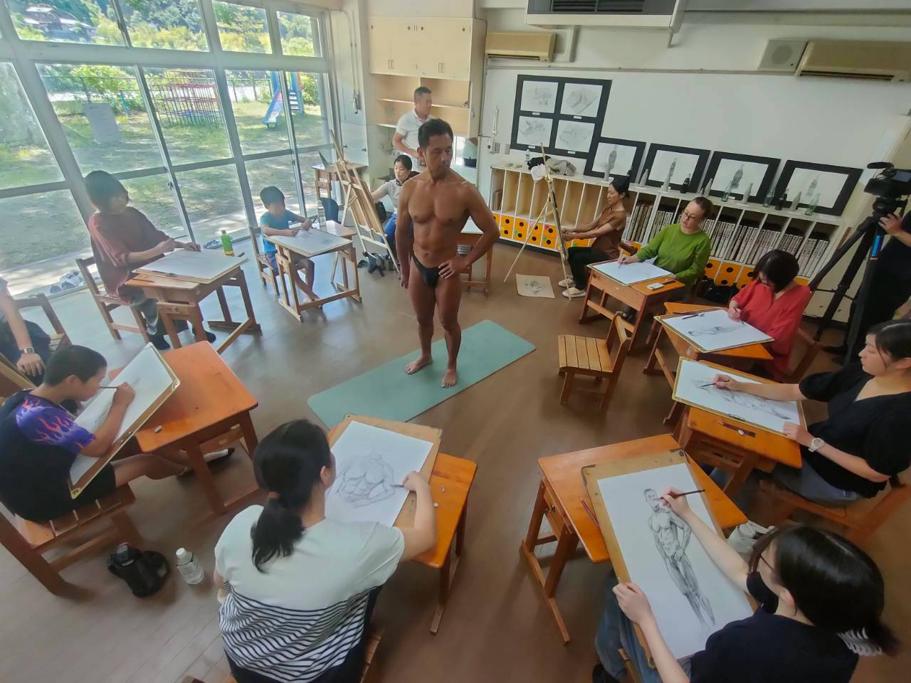
月に一度の「視える 旧小鳩美術部」とは別に、8月21日（金）の午前、 特別授業「JINTAI」を開きました。副題は 「人体を視て描くことを学ぶ」。
美術教育の場で人体を学ぶとき、モチーフになるのは、たいていの場合石膏像です。 古代ギリシャ・ローマの人々が理想の人体を彫刻として刻み、それがルネサンス以降、 美術教育の教材として受け継がれてきました。 けれど「実物」、つまり理想的な生身の人体をモチーフにできる機会は、 それほど多くはありません。この日は、それを実現する一日でした。
📸 当日の様子
※ 写真はクリック（タップ）で拡大。長いキャプションも、拡大すると全文が読めます。
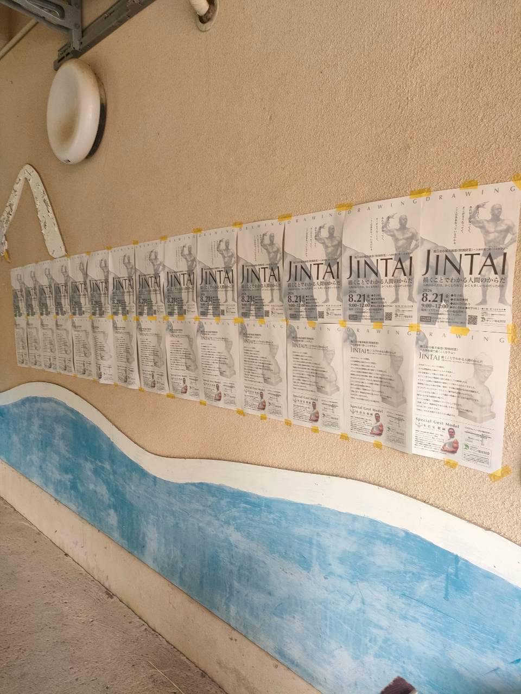
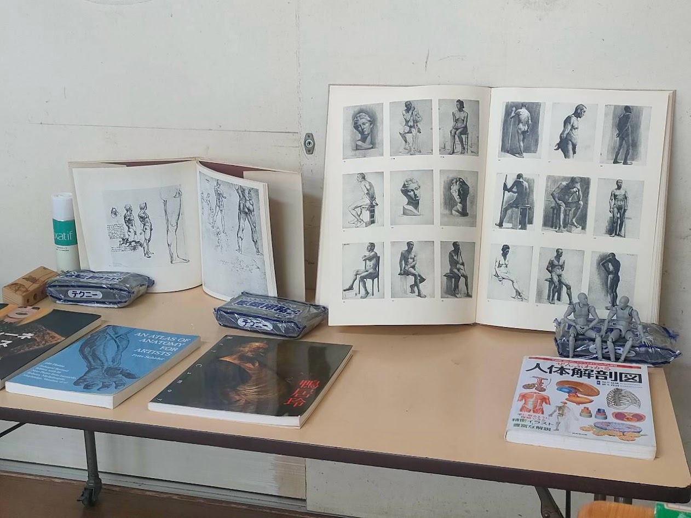
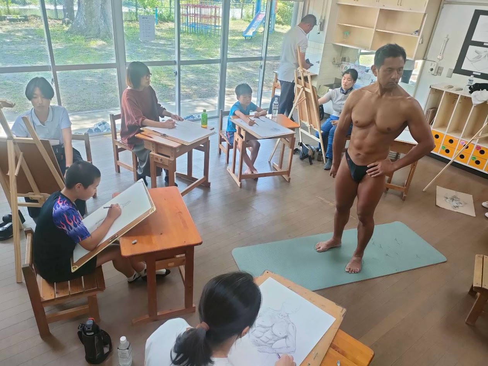
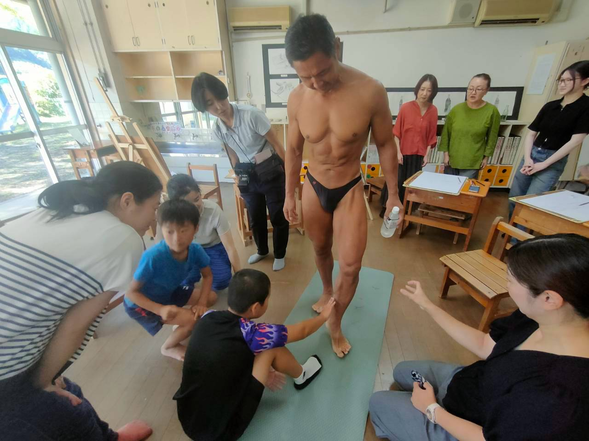
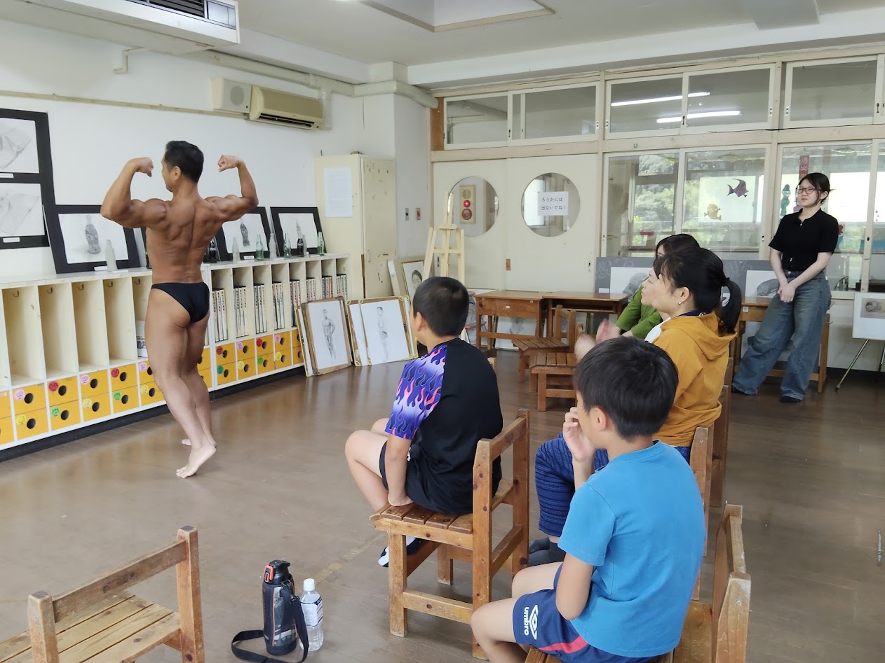
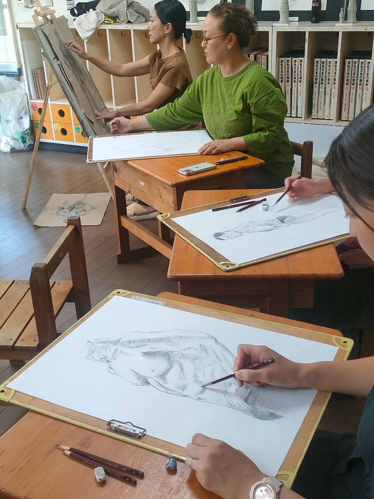
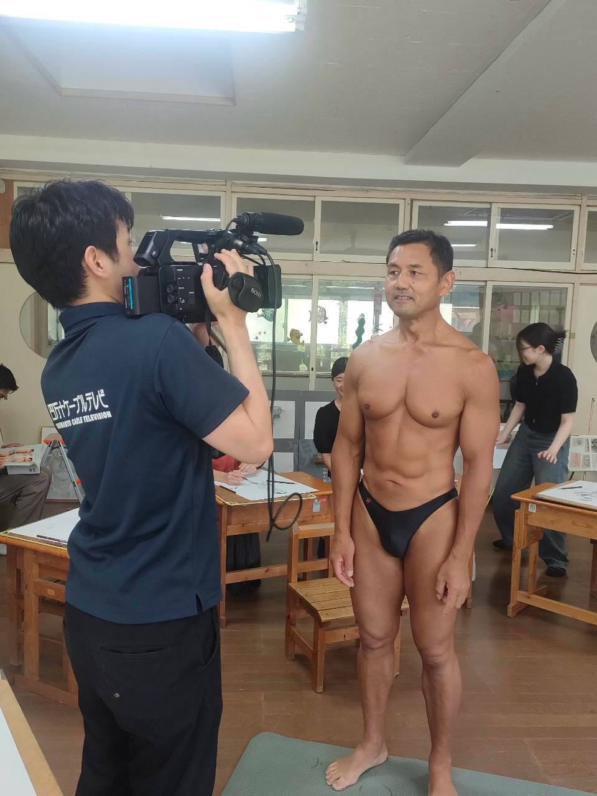
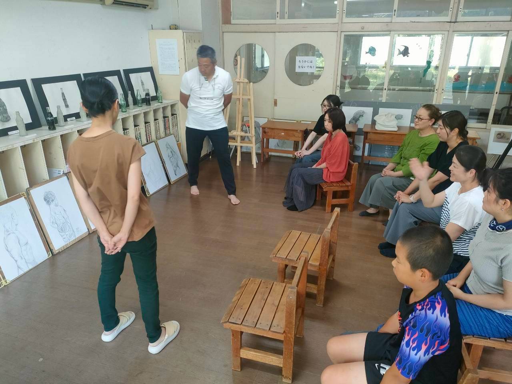
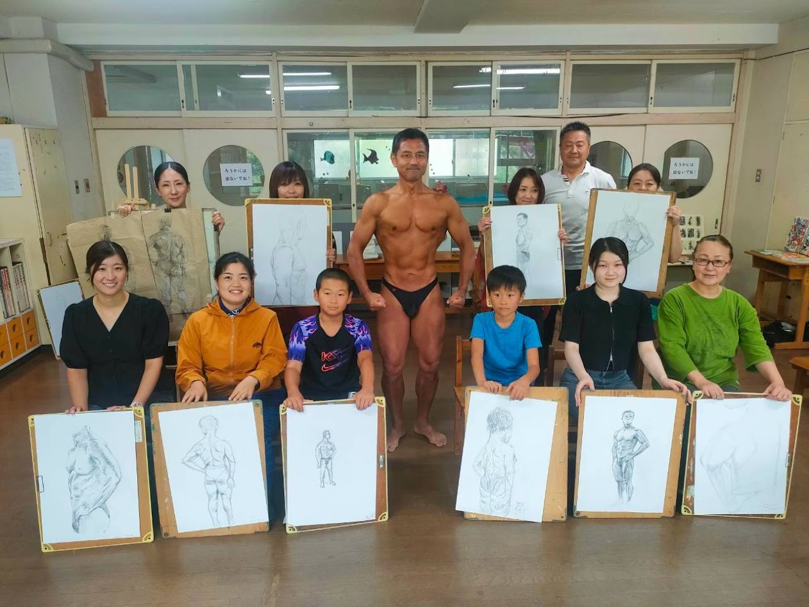
✍️ この日のながれ
朝9時から昼12時までの3時間。要予約・参加費無料・画材の貸出あり・初心者歓迎・見学OK という形で募りました。会場は、いつもの美術室があるCUEキュー。（旧小鳩保育所）です。
モデルをお願いしたのは、多治見聡嗣（たじみ さとし）さん。 愛知県一宮市で整体院「多治見操手院」を営みながら、 トレーニング歴45年、大会出場35年というボディビルダーです。 プロテインもサプリメントも、薬品もステロイドも摂らない 「リアルナチュラル」な生き方を実践されている方で、 整体院の院長としての視点から「自然で健康的な理想的人体のフォルム」を 維持しておられます。
🗣 講評で聞けた話
描き上げたあとは、講評の時間です。並べた絵の前に立って、講師が一枚ずつ言葉をかけていきます。
これだけの人数それぞれについて、その人がどういう考えを込めて描いたのかは、 絵を生業にして、絵と真剣勝負をしてきた人でなければ分からないと思います。 先生が「ココは〇〇したいから、こう描いたと思うんだけど」と口にすると—— 自分の意図がどうして分かったんだろうと不思議がる人、 分かってもらえて感激する人。 「そこを言ってくれたから、ここまで絵を描き進められた」という人もいました。
先生それぞれの真摯なコメントに、皆さんそれぞれ聞き入っていたように思います。
📺 取材が入りました
当日は、高知新聞と四万十ケーブルテレビの取材が入りました。 高知新聞は後日、一面とコラムで取り上げてくださいました。 ケーブルテレビもとても良くまとめてくださり、反響が大きかったです。
さらに9月15日には、NHK高知の「CATV便り」で概要が放送され、 あらためて話題になりました。
💬 いちばんの言葉：「こういう場があると」
ケーブルテレビの取材の最後に、ひとりの女性が答えてくださいました。 かつて十和で育ち、いまは大阪で暮らしている方です。
小・中学校の時十和にいたが、あまり描く場が無くて、自分ひとりで家で描くことが多かった。 こういう場があると色々刺激もあるし、自分の新しい能力というものが手に入ったり、 発見できると思うので、めっちゃ良い場所だと思う。
── 取材に答えてこの言葉に、この日の意味が言い当てられていたように思います。 中山間地域では、文化や「描く」ということに触れる機会が、なかなか得られません。 絵を描きたくても、それが叶わないことが多いのです。 絵に限った話ではなく、そうした機会をつくること、環境を整えることが 必要なのではないか——。
🧭 いちばんの発見：講師より
- 先生にお伺いしたいこと
この節は、1回目から3回目と同じように先生のお話を載せている部分です。 この日の発見や感想を、思いつくままに書いて頂けたら。
🌿 まとめ
石膏像ではなく、生身のからだを視る。 ふくらはぎに触れ、ポーズが変わるたびに形と影の変わるさまを追いかける。 チラシに書いた「人間のからだは、かくも巧みで、かくも美しいものだったのか」を、 この日は実物で確かめる3時間になりました。
生身のからだを視て描くことで、一人ひとりが得るものは、たしかにあります。 描けたという手応え、見えたものが見えたように描けたときの感動。 けれどこの日いちばん大きかったのは、 それを自分だけのものにせず、ほかの人と共有する喜び だったように思います。 講評の時間も、取材に答えたあの言葉も、同じことを指していました。
「またとない機会」でした。けれど、またとないままで終わらせないために—— 月に一度の活動を、これからも続けていきます。
🗒 開催のおしらせ（チラシ）
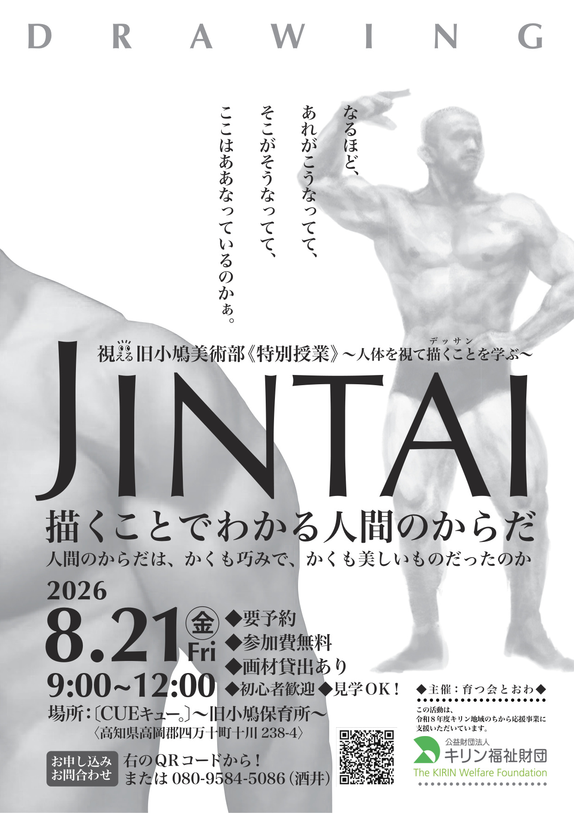
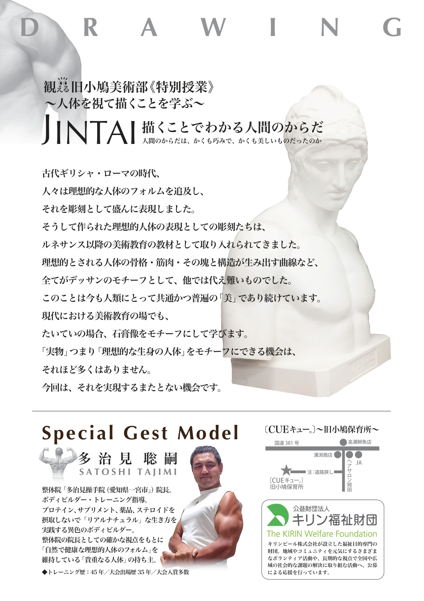